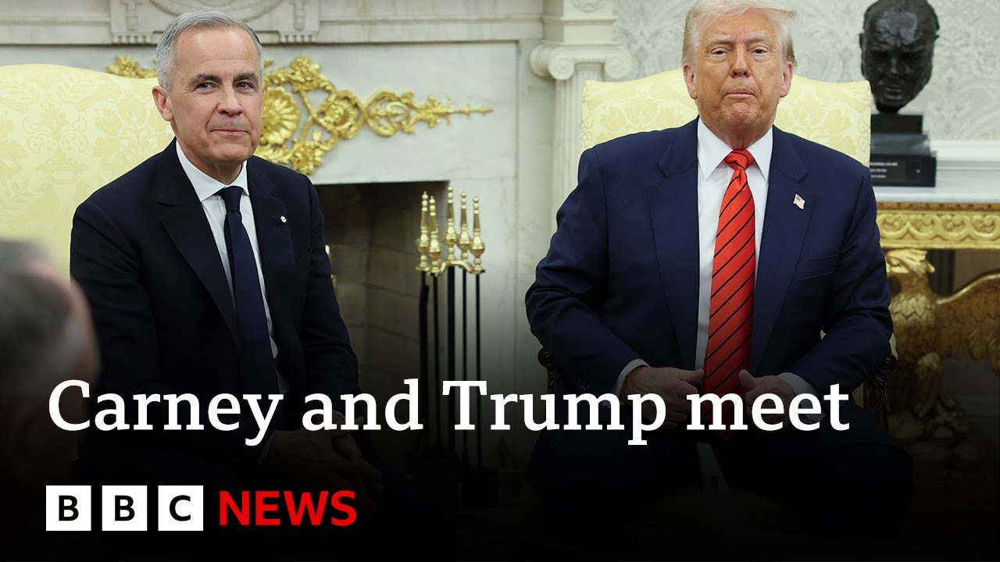

来B站一起耍【Global每日英语简报】
【加拿大总理卡尼警告特朗普：“加拿大永远不会出售” | BBC新闻】
Summary: Canadian PM Mark Carney clashed with President Trump over tariffs and US annexation remarks during a White House meeting, vowing to defend Canadian industries while Trump hinted at complex negotiations and teased major foreign policy announcements.
摘要： 加拿大总理马克·卡尼在白宫会晤中与特朗普总统就关税和美国吞并言论发生争执，誓言捍卫加拿大产业，而特朗普则暗示谈判复杂并预告重大外交政策声明。

⏱️ Estimated Reading Time: 5 min
Canada's Mark Carney has appeared with President Trump at the White House and there were at times testy exchanges over tariffs and over Mr. Trump's repeated calls for Canada to become the 51st state of the US.
加拿大的马克·卡尼与特朗普总统在白宫会面，双方就关税以及特朗普多次呼吁加拿大成为美国第51个州的言论时有激烈交锋。
Sarah Smith reports now from Washington.
莎拉·史密斯从华盛顿发回报道。
This friendly greeting suggests they do want to try to get along with their body language in sync almost.
这一友好问候表明他们确实希望和睦相处，肢体语言几乎同步。
It was Mark Carney's vigorous opposition to Donald Trump and his taunts about making Canada the 51st American state that helped to win him the recent Canadian election.
马克·卡尼对特朗普的强烈反对以及对其将加拿大变为美国第51个州的嘲弄的回应，帮助他赢得了最近的加拿大选举。
We are supporting our friends and neighbors in the crosshairs of President Trump through a crisis that we did not create.
我们正支持被特朗普总统针对的朋友和邻居，共同度过这场并非我们制造的危机。
We will fight back with everything we have.
我们将竭尽全力反击。
Canadian aluminium as well as steel, vehicles, and car parts have all been hit hard by 25% tariffs when they're exported to America.
加拿大铝、钢铁、汽车及零部件在出口美国时均受到25%关税的沉重打击。
Can Mr. Carney negotiate a tariff reduction?
卡尼能否谈判降低关税？
I don't know.
我不知道。
He's coming to see me.
他要来见我。
I'm not sure what he wants to see me about, but I guess he wants to make a deal.
我不确定他为何要见我，但估计他想达成协议。
Everybody does.
每个人都想。
It's attitudes like this that will not make negotiations easier.
正是这种态度会让谈判更难。
Can we make a deal with Canada?
我们能和加拿大达成协议吗？
I think it's really complex.
我认为非常复杂。
I think this is really complex because they have been basically feeding off of us for decades upon decades upon decades, right?
我认为这非常复杂，因为他们几十年来基本上一直在占我们便宜，对吧？
They have their socialist regime.
他们有社会主义制度。
Canada, if you ever had a problem.
加拿大，如果你曾有过问题。
In the Oval Office, Donald Trump was asked if he still wants to take over Canada.
在椭圆形办公室，有人问特朗普是否仍想接管加拿大。
It would really be a wonderful marriage because it's two places.
这将是非常美好的结合，因为这是两个地方。
They get along very well.
他们相处得很好。
They like each other a lot.
他们非常喜欢彼此。
Well, if if if I may, um, as you know from real estate, there are some places that uh are never for sale.
呃，如果可以的话，嗯，正如房地产行业所知，有些地方永远不会出售。
That's true.
确实如此。
Uh we're sitting in one right now, you know, Buckingham Palace that you visited as well.
呃，我们现在就坐在其中一个地方，你知道，你也参观过的白金汉宫。
Uh and um having met with the owners of Canada over the course of the campaign uh last several months, uh it it it's not for sale, won't be for sale.
呃，嗯，在过去几个月的竞选活动中与加拿大的“业主们”会面后，呃，它不会出售，永远不会出售。
Mr. Trump acknowledged that they do have some tough points to discuss, but says he thinks that will be fine.
特朗普承认双方确实有些棘手问题要讨论，但表示他认为会顺利解决。
They'll be talking about the war in Ukraine as well, and he claims America will always be friends with Canada.
他们还将讨论乌克兰战争，他声称美国将永远是加拿大的朋友。
While he had the TV cameras in the Oval Office, Donald Trump took the opportunity to also make a couple of pretty big foreign policy announcements.
趁着电视摄像机在椭圆形办公室，特朗普还借机宣布了几项重大外交政策。
First off, he said that Houthi rebels in Yemen had told the United States that they do not want to fight anymore, that they have pledged to stop attacking international shipping and that as a result, the US bombing campaign against them uh will be over effective immediately, said President Trump.
首先，他表示也门胡塞武装已告知美国他们不想再战斗，并承诺停止袭击国际航运，因此美国对他们的轰炸行动将立即结束，特朗普总统说道。
And then he teased what he called a very very big very very positive announcement yet to come.
接着他预告将有一项“非常非常重大、非常非常积极”的声明。
He is leaving on a trip to the Middle East visiting um Saudi Arabia, United Arab Emirates and Qatar next week.
他即将启程访问中东，下周将访问沙特阿拉伯、阿联酋和卡塔尔。
And he said before he goes he will make a really important announcement on a certain subject.
他表示在出发前将就某个议题发布真正重要的声明。
He said the most important that's been made for years that may be something to do with the Middle East peace process.
他称这是多年来最重要的声明，可能与中东和平进程有关。
It may be something else.
也可能是其他事情。
We wait to find out either later this week or the beginning of next.
我们等待在本周末或下周初揭晓。
Indeed, we will.
确实如此。